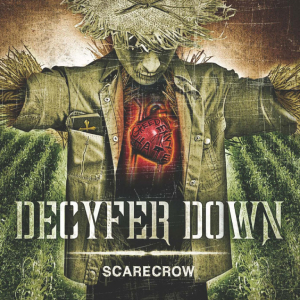
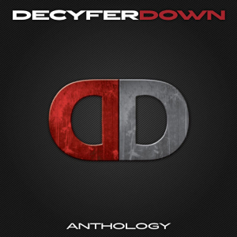

Decyfer Down
MENU
Inicio
Integrantes
Videos
Recitales
Inicio
Integrantes
Recitales
Videos
Discografia
End of Grey (Año 2006)
Track list
Break free
Life Again
Fight like this
Burn back the sun
I `ll breather foryou
Walking Dead
Here to you
Never lost
No longer
Vanity
Crash (Año 2008)
Track list
Over My Head
Fading
Best I Can
Crash
Ride With Me
Desperate
Forever With You
Moving On
The Life
Wasting Away
Scarecrow (Año 2013)

Track list
The River
Memory
Worst Enemy
Scarecrow
So in Love
Bleeding Lies
Say Hello
Fight to Win
Westboro
Some Things Never Change
Anthology (Año 2014)

Track list
Fight Like This
Crash
Life Again
Desperate
Fading
The River
Best I Can
Fight to Win
Break Free
Ride With Me
So In Love
Burn Back the Sun
No Longer
The other side of darkness (Año 2016)
Track list
Dead Skin
Anchor Me
Lifetime
Nothing More
Burn Back the Sun
Other Side of Darkness
Rearrange
Don t Walk Away
Beautiful Lie
Believe in Me